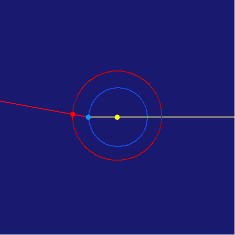
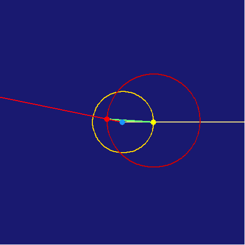
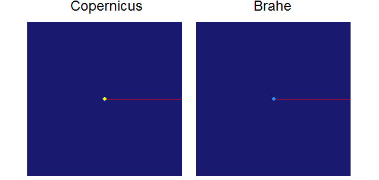

Equivalence of Hypotheses
Nicolaus Copernicus / Tycho Brahe
Copernicus
Copernicus has the earth (blue) and Mars (red) go about the sun (yellow).

Brahe
Brahe has the sun (yellow) go around the earth (blue) , and has Mars (red) go around the sun.
- Watch the yellow sun. It moves uniformly
- Watch the bright green line connecting the sun with Mars. It moves uniformly around the sun.

Combination
If we take each of these animations, and then "zoom out," we can see where on the infinitely-far-away zodiac the lines of sight from the earth to Mars and the sun appear. As Kepler proves in his New Astronomy, the two are identical. Note that the retrograde motion of Mars always occurs when it is at opposition to the sun.

To add
Both of these models have Mars moving on an epicycle, but this is done in the same way, so it does not alter the equivalence.